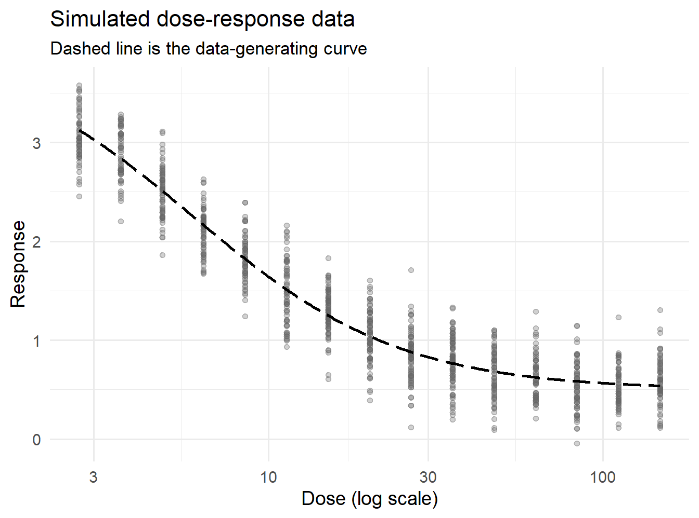
SGD: Log-Logistic Dose-Response Curves
By: Alex, Anton & Markus
\[ f(x \mid \alpha,\beta,\gamma,\delta) = \gamma + \frac{\delta - \gamma}{1 + \exp\{\beta\log(x) - \alpha\}}, \qquad \theta := (\alpha,\beta,\gamma,\delta)^{\mathsf T} \in \mathbb{R}^4 \]
\[ L(\theta) = \frac{1}{2N}\sum_{i=1}^{N} \left(y_i - f(x_i \mid \alpha,\beta,\gamma,\delta)\right)^2 \]
and estimate the parameter \(\theta\).
We set \(\theta_{\mathrm{true}} = (2.5,1.4,0.5,4.0)^{\mathsf{T}}\) as a benchmark.
dose_response <- function(x, theta) {
alpha <- theta[1]
beta <- theta[2]
gamma <- theta[3]
delta <- theta[4]
gamma + (delta - gamma) *
plogis(alpha - beta * log(x))
}
sigma <- 0.25
N <- 5000
set.seed(123)
log_grid <- seq(1, 5, length.out = 15)
x <- exp(sample(log_grid, N, replace = TRUE))
y <- dose_response(x, theta_true) +
rnorm(N, mean = 0, sd = sigma)
Loss function
\[ L(\theta) = \frac{1}{2N}\sum_{i=1}^{N} \left(y_i - f(x_i \mid \theta)\right)^2 \]
Gradient in terms of \(p_i = (1 + \exp\{\beta\log(x_i) - \alpha\})^{-1}\)
\[ \begin{aligned} \nabla L(\theta) &= -\frac{1}{N}\sum_{i=1}^{N} \mathrm{res}_i\,\nabla f(x_i \mid \theta) \\[1em] &= -\frac{1}{N}\sum_{i=1}^{N}\mathrm{res}_i \begin{pmatrix} (\delta-\gamma)p_i(1-p_i) \\[0.4em] -(\delta-\gamma)\log(x_i)p_i(1-p_i) \\[0.4em] 1-p_i \\[0.4em] p_i \end{pmatrix}. \end{aligned} \]
The components follow the order \(\theta = (\alpha,\beta,\gamma,\delta)^{\mathsf T}\).
gradient_func <- function(theta, x, y) {
alpha <- theta[[1]]
beta <- theta[[2]]
gamma <- theta[[3]]
delta <- theta[[4]]
lx <- log(x)
p <- plogis(alpha - beta * lx)
q <- p * (1 - p)
residual <- y - (gamma + (delta - gamma) * p)
rq <- residual * q
-c(
(delta - gamma) * sum(rq),
-(delta - gamma) * sum(rq * lx),
sum(residual * (1 - p)),
sum(residual * p)
) / length(y)
}Learning rate motivated by Robbins–Monro
\[ \gamma_n = \frac{\gamma_0 K}{K+n^a} \sim \gamma_0 K n^{-a}. \]
For \(\tfrac12<a\leq1\),
\[ \sum_{n=1}^{\infty}\gamma_n=\infty, \qquad \sum_{n=1}^{\infty}\gamma_n^2<\infty. \]
The theorem requires strong convexity of the risk \(\mathbb{E}[L(\theta)]\). Our risk is not globally convex (see appendix).
sgd <- function(theta_init, x, y, grad, tol = 1e-4,
gamma_0 = 0.5, K = 100, a = 0.9,
batch_size = 100, max_epochs = 500,
cb = NULL) {
theta <- theta_init
n <- length(y)
step <- 0
if (!is.null(cb)) cb() # Record initial theta
for (epoch in seq_len(max_epochs)) {
shuffled_idx <- sample.int(n)
for (start in seq.int(1, n, by = batch_size)) {
step <- step + 1
learning_rate <- gamma_0 * K / (K + step^a)
batch_idx <- shuffled_idx[
start:min(start + batch_size - 1L, n)
]
batch_grad <- grad(theta, x[batch_idx], y[batch_idx])
theta <- theta - learning_rate * batch_grad
}
if (!is.null(cb)) cb()
}
list(theta = theta)
}Generate noiseless data from \(\theta_{\mathrm{true}} = (2.5, 1.4, 0.5, 4)^{\mathsf{T}}\), with \(N = 10{,}000\).
Compare squared parameter errors before and after SGD:
Before: \(\|\theta_{\mathrm{true}}-\theta_0\|_2^2\); after: \(\|\theta_{\mathrm{true}}-\hat\theta\|_2^2\).
| Start | \(\theta_0\) | Before | After SGD |
|---|---|---|---|
| True | \((2.5, 1.4, 0.5, 4)\) | 0.0000 | 0.0000 |
| Guess 1 | \((1.9, 1, 2, 2)\) | 6.7700 | 0.0208 |
| Guess 2 | \((2.3, 1.7, 1, 5)\) | 1.3800 | 0.4096 |
This is a numerical sanity check; finite SGD runs need not recover the parameters exactly.
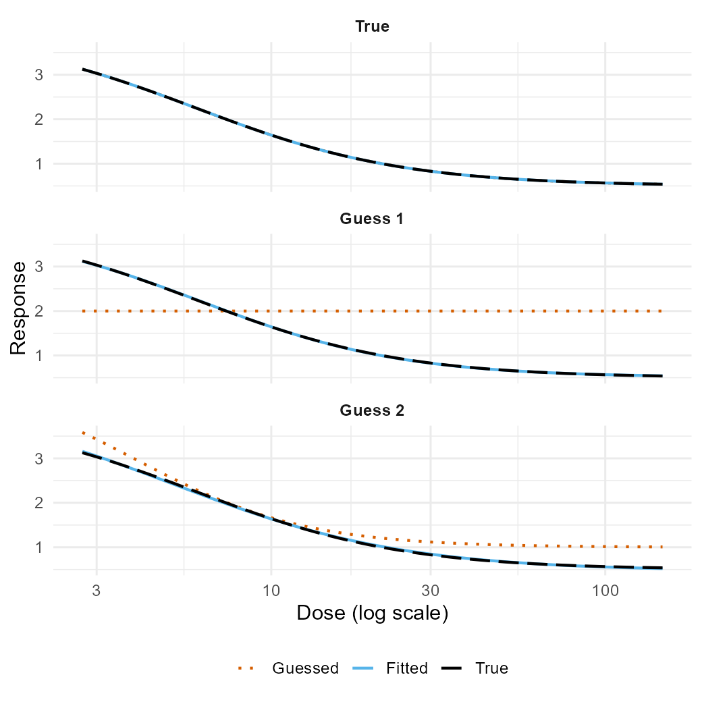
SGD: \(\gamma_0 = 0.5\), \(K = 100\), \(a = 0.9\); batch size 100; 100 epochs. Seed 123 for data and batch shuffling. Results regenerate when rendering.
To model \(\theta\) using SGD different parameters must be studied.
These will be inspected in the following.
Two problems:
For intial learning rate \(\gamma_0=0.01\)
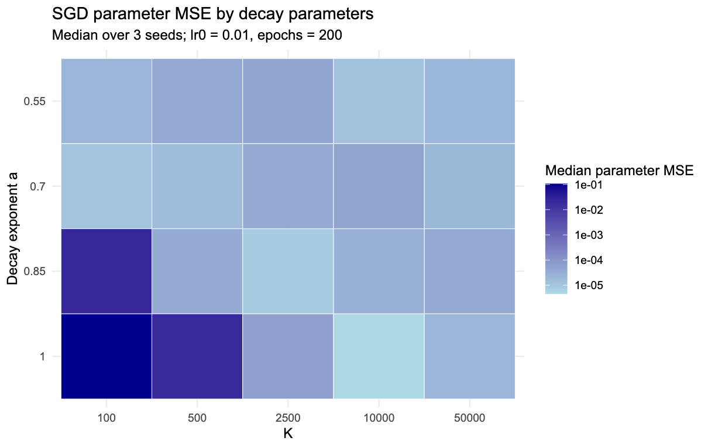
Heatmap showing choice of \(a\) and \(K\) for \(\gamma_0=0.01\)
For intial learning rate \(\gamma_0=0.5\)
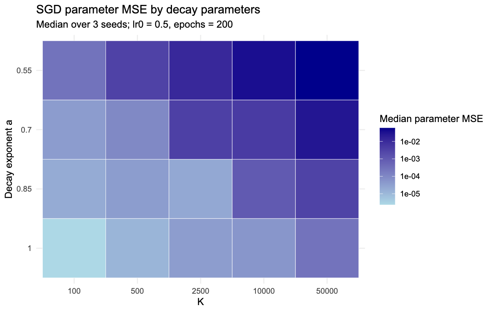
Heatmap showing choice of \(a\) and \(K\) for \(\gamma_0=0.5\)
For intial learning rate \(\gamma_0=3\)
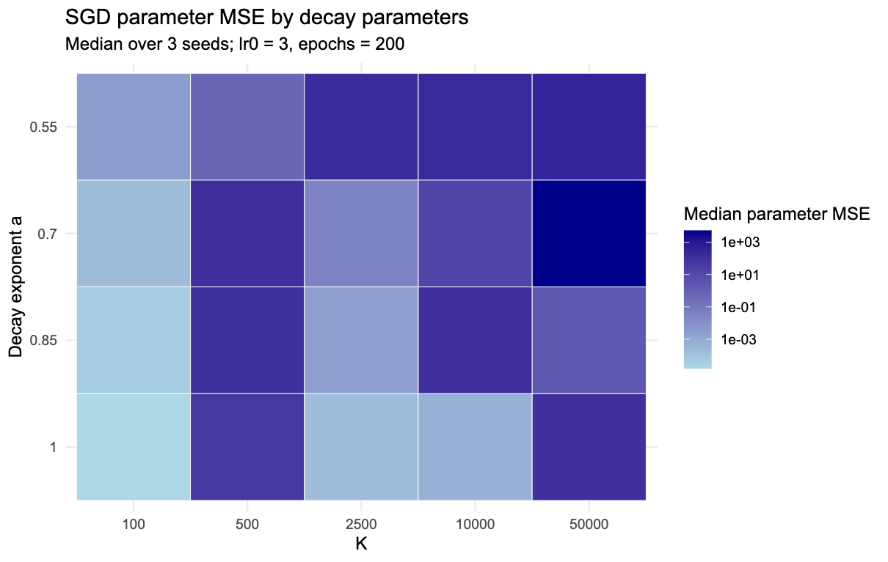
Heatmap showing choice of \(a\) and \(K\) for \(\gamma_0=3\)
It seems that setting \(a=1\) and \(K=10,000\) is somewhat resonable for different initial learning rates.
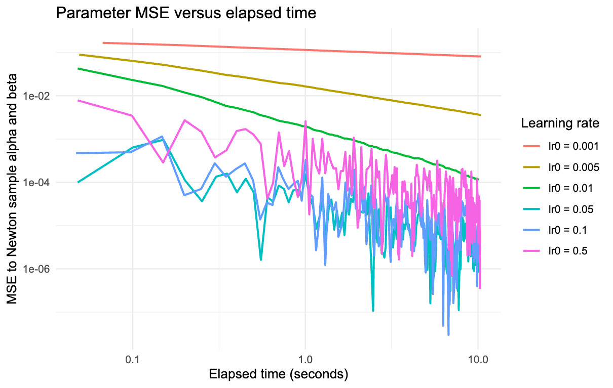
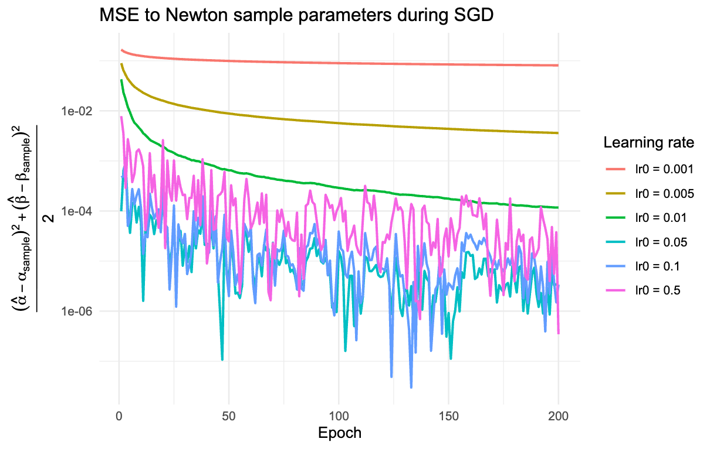
Too small value of \(\gamma_0\) makes convergence very slow, but large values seems to make the results very random.
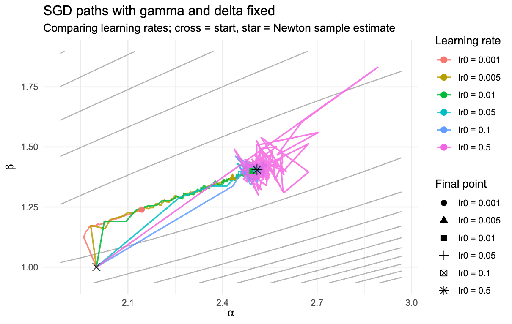
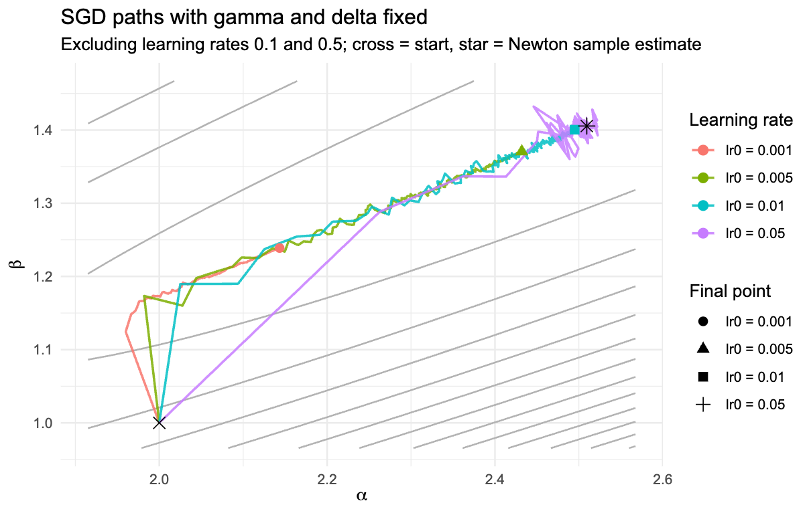
Taking \(\gamma_0\) too large seems to make it jump all over the place. Having \(\gamma_0\) too little makes it not converge at all. A value in between is probably to prefer.
We try different seeds to see if we randomly ends in local minima and not the global minimum.
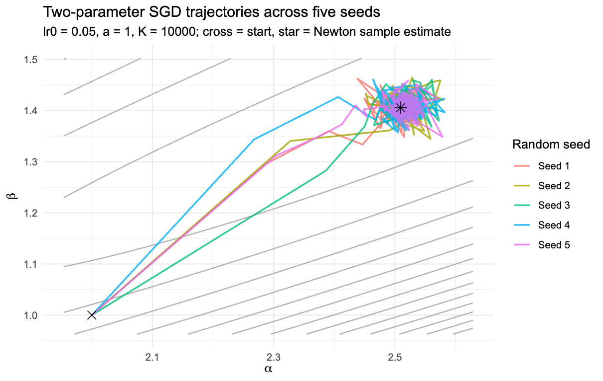
Path (\(a=1\), \(K=10000\), \(\gamma_0=0.05\)) with max epochs of 200
It seems that all five seeds converge to the same minima. They all had the same starting point though. If chaning this effets the minima is also to be explored.
Trying different starting guesses on the parameters \((\alpha,\beta)\) also shows how robust the SDG is:
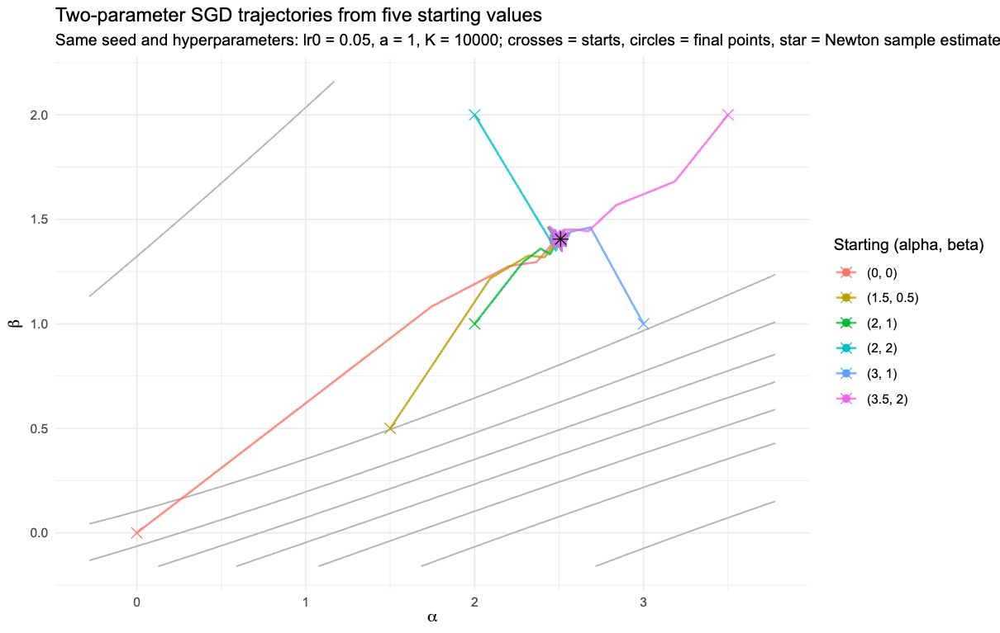
Path (\(a=1\), \(K=10000\), \(\gamma_0=0.05\)) with max epochs of 200
Changing the starting guess on \((\alpha,\beta)\) also seems to be robust.
This could indicate that the optimization problem is well-behaved. Even though the problem is not convex.
Instead of using all observations at every step, we update the parameters from a random subset of the data:
\[ \theta_{n+1} = \theta_n - \gamma_t \frac{1}{|I_n|} \sum_{i \in I_n} \nabla L_i(\theta_n), \]
where \(I_n\) is a mini-batch of observations.
This is especially useful for large datasets, where computing the full gradient is slow or memory-heavy.
We study how the number of batches effect the path.
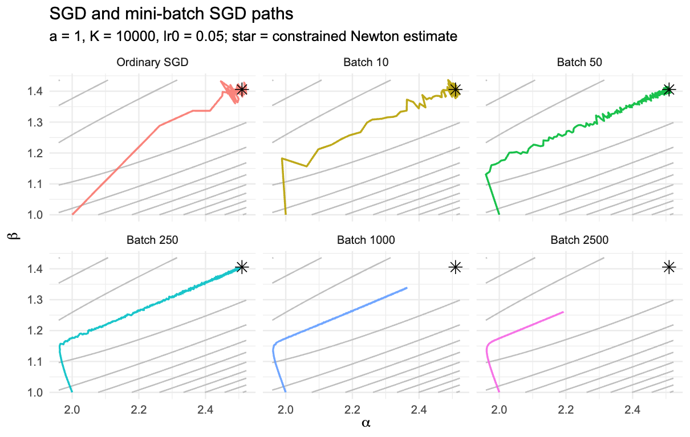
Paths (\(a=1\), \(K=10000\), \(\gamma_0=0.05\)) with max epochs of 200 for mini-batches
It is clear, that having more batches leads to a more stabile result, but the congergence becomes more time-consuming.
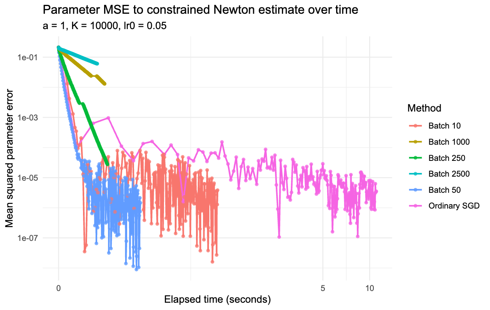
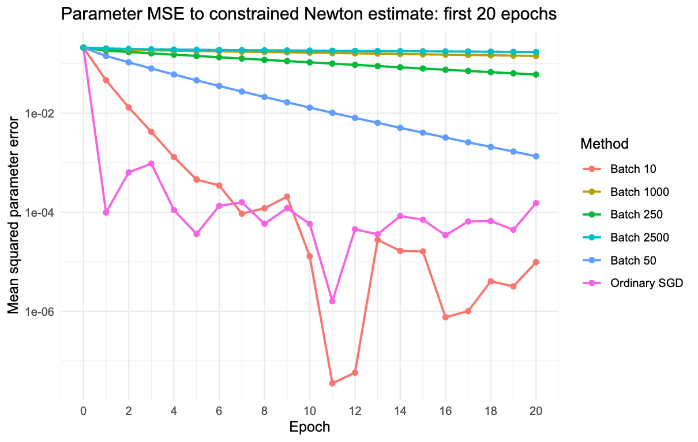
Having many batches gives one more stabile results, but the convergence takes many more epochs and time. The fastest (in time) to get to the tolerance of \(10^{-5}\) seems to be for batch size 50. So having batches seems to help.
We compare SGD with gradient descent (GD), and damped Newton with backtracking:
| Setting | GD | Damped Newton |
|---|---|---|
| Restart step \(\gamma_0\) | \(1\) | \(1\) |
| Armijo constant \(c\) | \(0.05\) | \(0.05\) |
| Reduction factor \(d\) | \(0.5\) | \(0.5\) |
| Maximum iterations | \(600\) | \(100\) |
| Gradient tolerance | \(10^{-4}\) | \(10^{-4}\) |
Stop when \(\|\nabla L(\theta)\|_2\) reaches the tolerance, or at the iteration cap. The step size restarts at \(\gamma_0\) each iteration.
Newton direction and gradient fallback
Let \(g_k = \nabla L(\theta_k)\) and \(H_k = \nabla^2 L(\theta_k)\). The Newton direction is \(p_k^{\mathrm N} = -H_k^{-1}g_k\).
A direction is a descent direction if \(g_k^{\mathsf T}p_k < 0\). We use
\[ p_k = \begin{cases} p_k^{\mathrm N}, & g_k^{\mathsf T}p_k^{\mathrm N} < 0, \\[0.4em] -g_k, & g_k^{\mathsf T}p_k^{\mathrm N} \geq 0. \end{cases} \]
The fallback guarantees \(g_k^{\mathsf T}(-g_k) = -\|g_k\|_2^2 < 0\) when \(g_k \neq 0\). Armijo backtracking then chooses \(\gamma_k\) for \(\theta_{k+1} = \theta_k + \gamma_k p_k\).
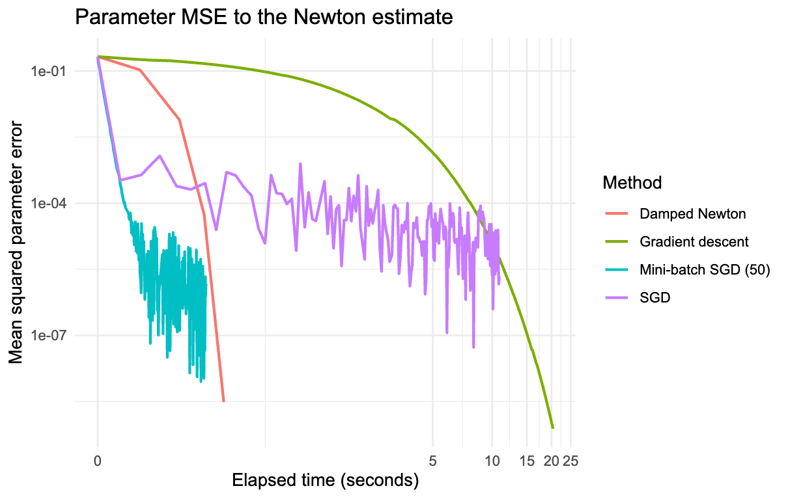
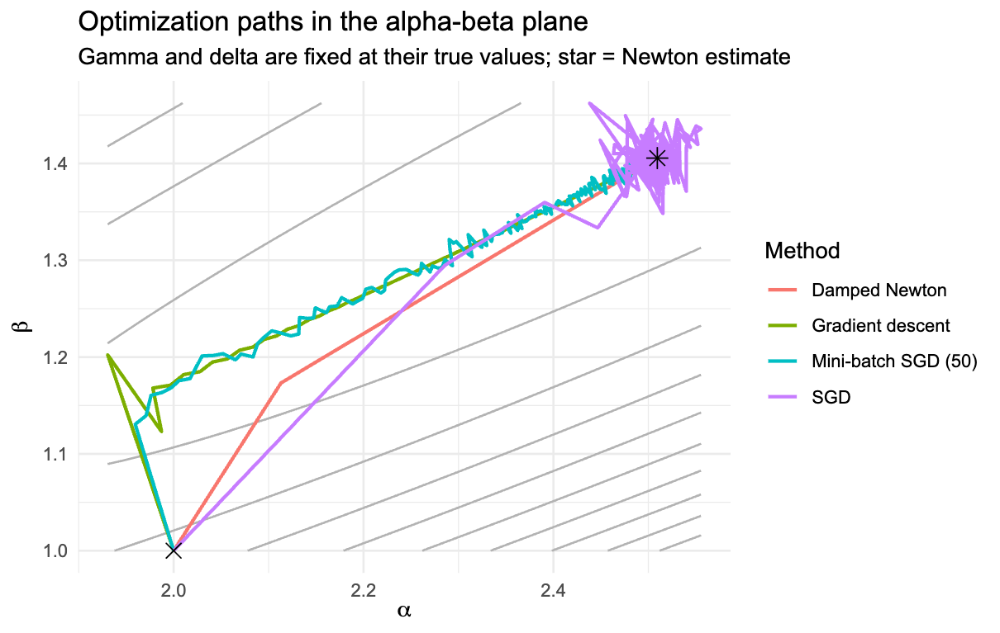
From the above plots, it is clear that mini-batches leads to the fastes convergence for a tolerance of \(10^{-6}\). Newton and GD are best for when the tolerance is very low. But especially GD is very slow. If a very precise tolerance is not needed, SGD works just fine, with a very fast convergence.
Now, let us instead move from only looking on \((\alpha,\beta)\) to optimize all four parameters at a time.
True parameters: \(\theta_{\mathrm{true}} = (2.5, 1.4, 0.5, 4.0)^{\mathsf T}\); starting guess: \(\theta_0 = (3, 2, 2, 5)^{\mathsf T}\). Every update traced:
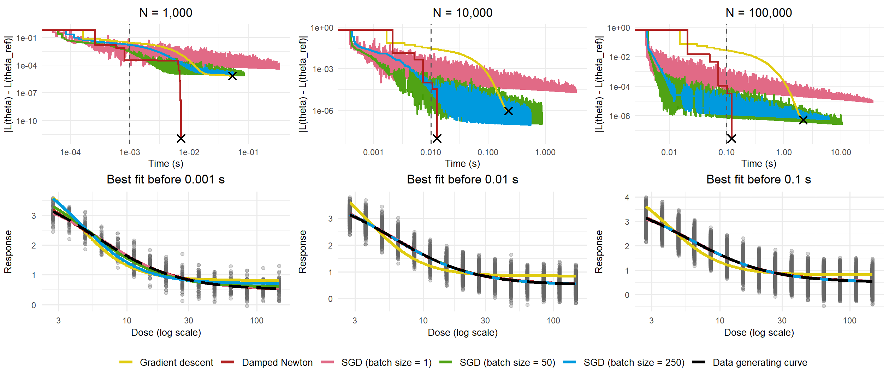
Curves use \(\theta\) that minimize \(|L(\theta) - L(\theta_{\mathrm{ref}})|\) before time (dashed line). Black X: converged.
SGD: \(\gamma_0 = 0.5\), \(K = 100\), \(a = 0.9\); max epochs \((100, 500, 500)\) for batches \((1, 50, 250)\). Stops at the epoch cap.
True parameters: \(\theta_{\mathrm{true}} = (2.5, 1.4, 0.5, 4.0)^{\mathsf T}\); starting guess: \(\theta_0 = (1, 4, 0, 2)^{\mathsf T}\). Every update traced:
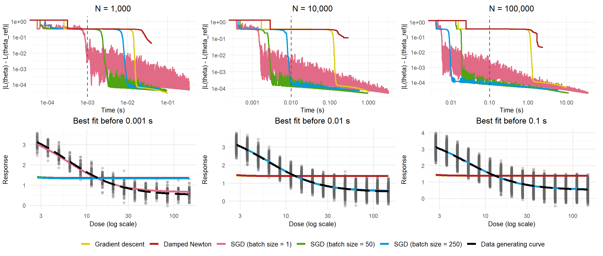
Curves use \(\theta\) that minimize \(|L(\theta) - L(\theta_{\mathrm{ref}})|\) before time (dashed line). Black X: converged.
SGD: \(\gamma_0 = 0.5\), \(K = 100\), \(a = 0.9\); max epochs \((100, 500, 500)\) for batches \((1, 50, 250)\). Stops at the epoch cap.
\(\theta_{\mathrm{true}} = (2.5, 1.4, 0.5, 4.0)^{\mathsf T}\), \(N=10{,}000\):
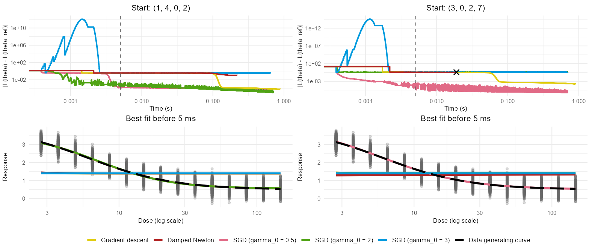
Curves use \(\theta\) that minimize \(|L(\theta)-L(\theta_{\mathrm{ref}})|\) strictly before 5 ms (dashed line). Black X: converged.
SGD: \(\gamma_0\in\{0.5,2,3\}\), \(K=100\), \(a=0.9\); batch size 50; 500 epochs. Every update traced.
For \(Y=f(X\mid\theta_{\mathrm{true}})+\varepsilon\), with \(\mathbb{E}[\varepsilon\mid X]=0\) and \(\operatorname{Var}(\varepsilon\mid X)=\sigma^2\),
\[ R(\theta):=\mathbb{E}[L(\theta)] =\frac{\sigma^2}{2} +\frac12 \bigl(f(X\mid\theta)-f(X\mid\theta_{\mathrm{true}})\bigr)^2. \]
Example
\[ \theta(t)=(t,1.4,0.5,4),\qquad r(t)=R(\theta(t))-\frac{\sigma^2}{2}. \]
If \(R\) were convex, its restriction \(r\) would satisfy the midpoint inequality.
Midpoint counterexample
| \(t\) | \(r(t)\) |
|---|---|
| 2.5 | 0.0000 |
| 10.0 | 3.6557 |
| 17.5 | 3.7684 |
Since \(10=(2.5+17.5)/2\), convexity would require
\[ r(10)\leq\frac{r(2.5)+r(17.5)}{2}. \]
Instead, \(3.6557 > 1.8842\).